Defining the issue
Facebook plays an enormous role in our digital lives–it connects us to friends, helps us log in to hundreds of other products, and provides a platform where we can engage with active communities around the world. But despite (or perhaps because of) its massive popularity in global culture, Facebook has evolved into a secretive monolith, plagued by scandals of user manipulation and testing, and scientific reports that paint a bleak picture of its impact on mental health.
I spent some time researching why using Facebook can have such negative effects on mental health, and gleaned some insights, like:
- Lack of "stopping-points"
- Passive consumption of the newsfeed
- Addictive user experience design
- Dopamine feedback loops triggered by notifications, sounds, and colors
We know that Facebook knows what it's doing, but it hasn't taken any real steps towards alleviating the problem. So what would it look like if Facebook really did care? If they became champions for mental health and wellness, using their immense cultural power and placing ideology above income–how would it transform their brand experience?
Developing an ideology
I wanted to write a one-sentence goal that I could always refer back to when developing the new brand experience, that could keep my design focused and functional. I decided that my solution, in a general sense, was to give the control back to the users.
In terms of the branding experience, I envisioned this to translate into a design language that communicates honesty, transparency, and trust, while also referencing the languages used for mental wellness apps and similar products. When a user is more in control, their time with a product is better spent, and they are likely to have higher quality engagements.
Moodboarding a new experience
To springboard into actually creating the visuals, I wrote down some of the visual traits I wanted to use, and set out to create moodboards for inspiration.
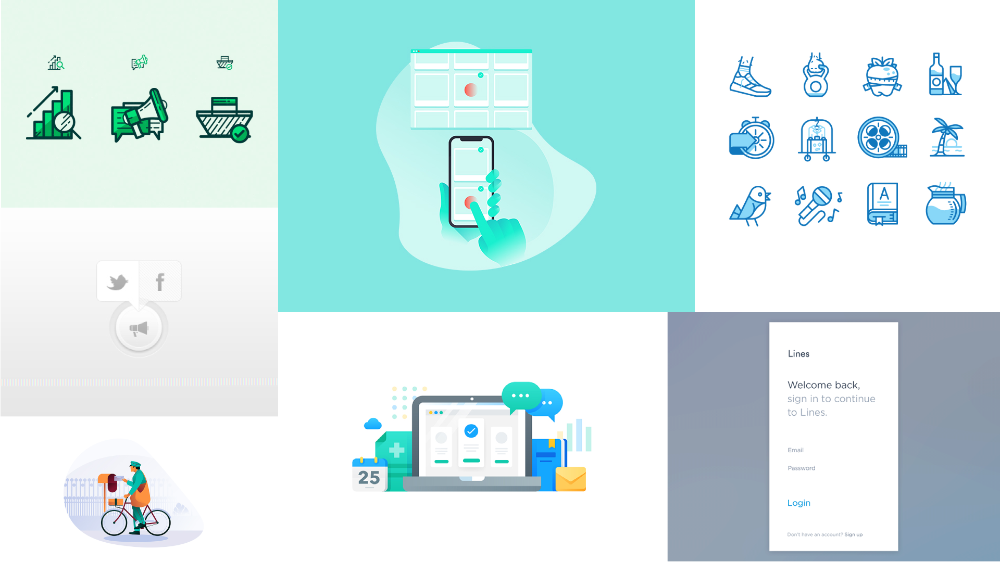Starting with the logo
I started with the logo first because I wanted it to encapsulate my established ideology and help define the rest of the brand experience. I has the idea of creating a modular logo: replacing the "Face" in Facebook with actual, illustrated faces. This says "our product is about the people that use it. They're so important to us that we want them in our logo." I initially started trying to find ways to portray diversity in my illustrations, but these didn't get past the sketch stage...
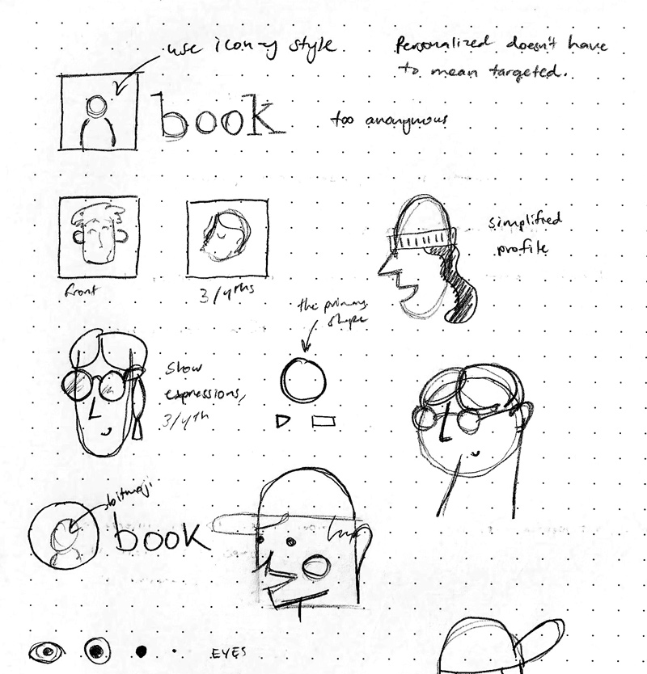 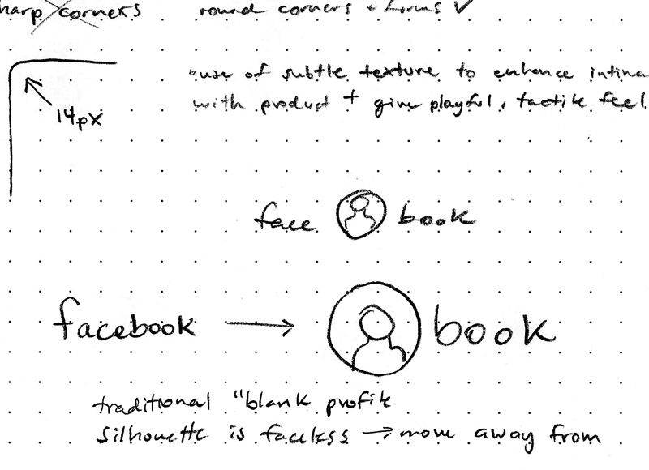...because I quickly realized there was a much more flexible and personalized way to go about this: using Bitmojis!
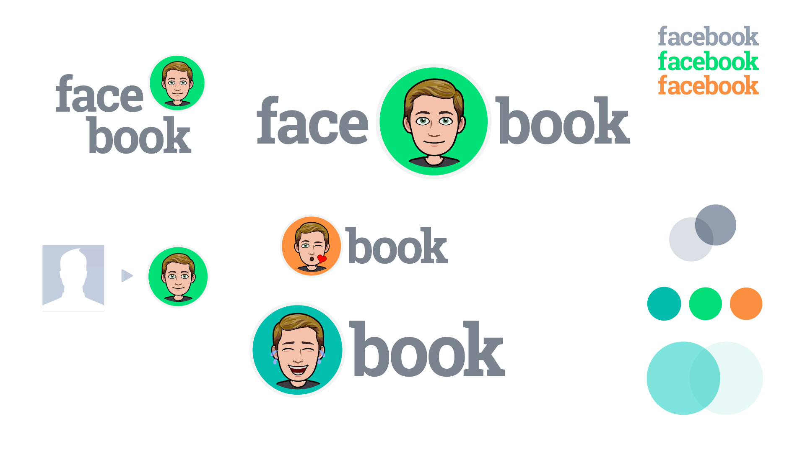
In my reimagination, Facebook has partnered with Bitmoji to foster a more personalized experience with the Facebook brand. The user is front and center–literally in the logo–symbolically taking back control of the platform that they're using. A huge portion of Facebook's audience are millenials, who crave more personalization in the products they use, and have been migrating to other, more intimate social media like Snapchat and Instagram.
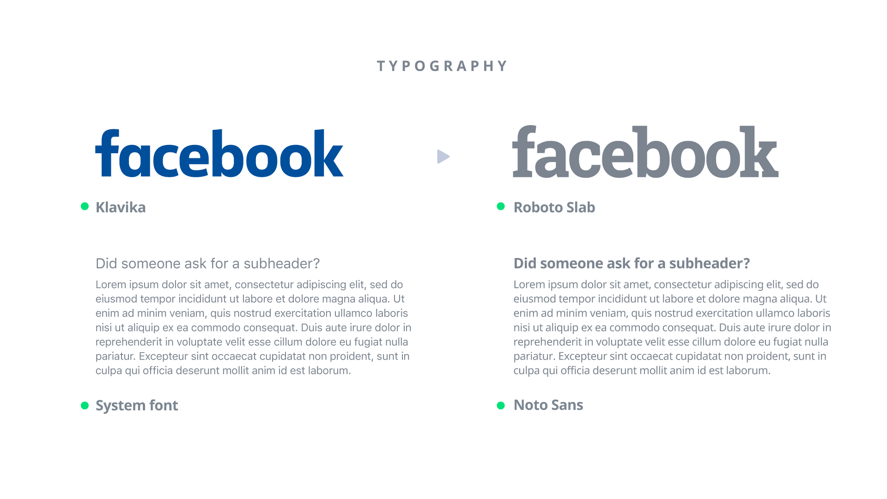I changed the iconic logotype to a clean, bold, and honest slab serif. Its dark gray color helps it fall more into the background, ready to be paired with bright accent colors and focus attention on the modular Bitmoji piece.
Facebook currently uses system UI fonts, presumably for performance optimization, but they didn't look quite as nice with Roboto Slab. To create a more cohesive experience across devices, and to better mesh with the logotype, I chose Noto Sans.
Color & Style
I drew color inspiration from my research into digital products that revolve around health and trust. The major UI element backgrounds are white, contrasted with an updated version of Facebook blue that makes it easy to visually separate content. A bright green is used as the main accent color, creating a playful & aesthetic that meshes well with the Bitmojis.
Secondary UI elements are colored with various shades of gray, varied to create visual depth and further aid the user in navigating content.
Illustrations also play a role in adding style to the landing page: they are used in conjunction with content created by the Facebook team, like articles or blog posts. These secondary elements have more fluid color palettes, but when grouped together must be visually cohesive. Illustrations are made in a simple line-art style, and should visually represent the topic that they're paired with. This makes it easy for the Facebook team to launch new content with cohesive, quick-to-make visuals.
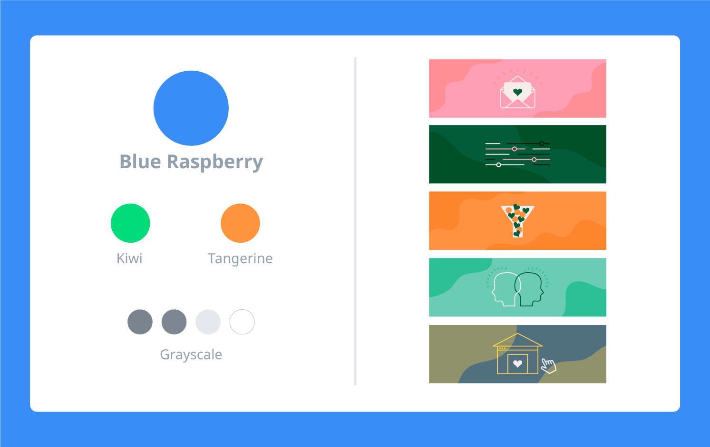

Designing the landing page
From my research, I knew I wanted to create a landing page with floating cards that helped to separate the information and create depth. I quickly sketched out a few directions and selected one of them to expand further in the Sketch App, where I then turned it into a digital wireframe. I kept the digital wireframe barebones, with just enough information to get myself coding.
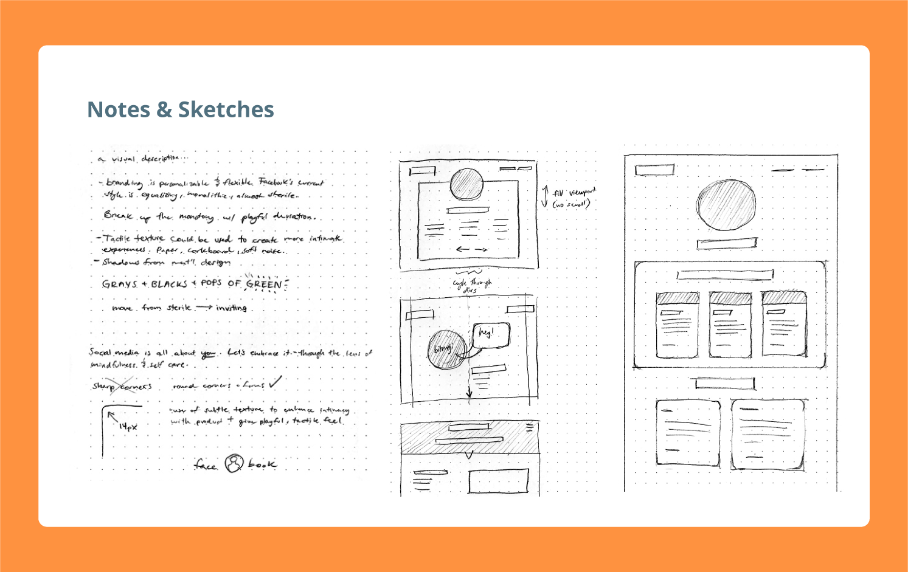
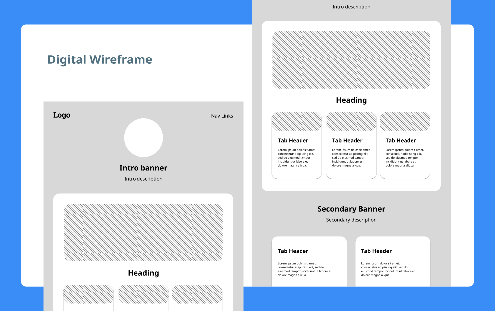
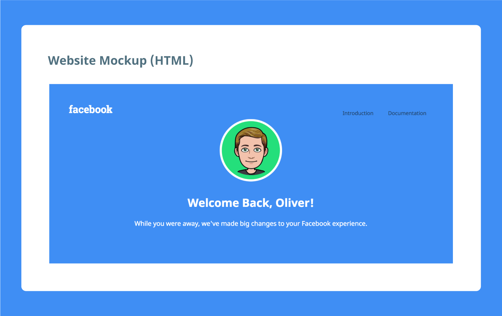
New features
To accompany my reimagined brand experience, I had some ideas for new product features that could be valuable for Facebook's biggest audience: Millenials. My generation is in the midst of an obsession with self-care, mental well being, and online privacy. Facebook's current brand experience does not mesh well with these concepts: it's designed to be addictive, is secretive about the way they target & test on users, and hasan equalizing corporate aesthetic that lacks playfulness.
Changes in advertising
Facebook has introduced a paid option that opts you out of advertising completely. No targeted ads, just you and your friends. They still offer a free plan, which includes advertisements–but the language stresses that the new advertisements are less intrusive.
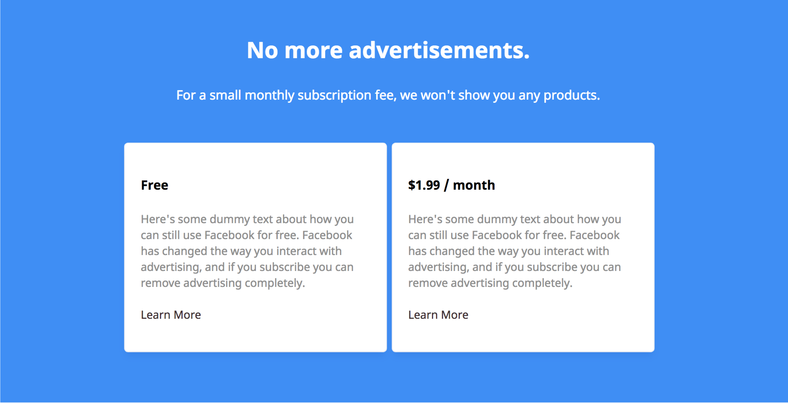Enhanced personalization
Introducing Bitmoji addresses an important aspect of Facebook's brand experience–that it feels cold and corporate. Allowing users to add even small personalized elements to their social media may prove popular with millenials.
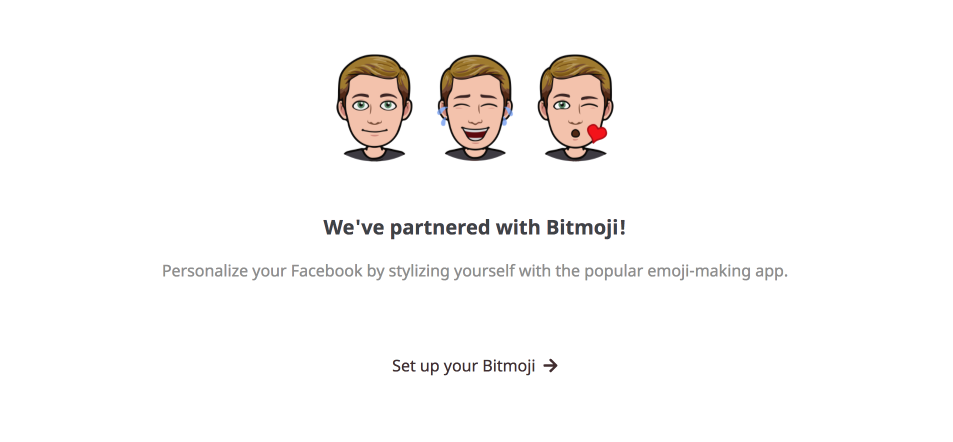A focus on mental health
Facebook's brand experience is now commonly associated with mental health issues. To combat this, the company will begin actively pursuing solutions, starting by offering free, 24/7 counseling support for its users.
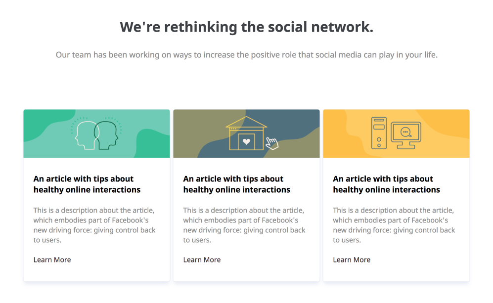 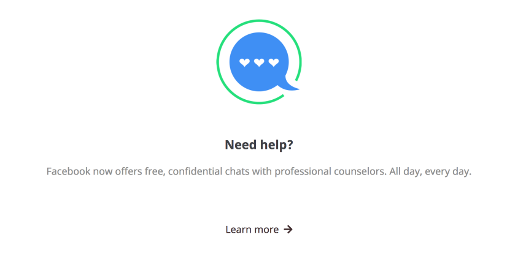Access to data
Facebook now offers users the ability to see data that the company tracks, and help it inform how they interact with the product. Users can opt out of data tracking completely, or use it to create better online habits and to hopefully improve their mental health.
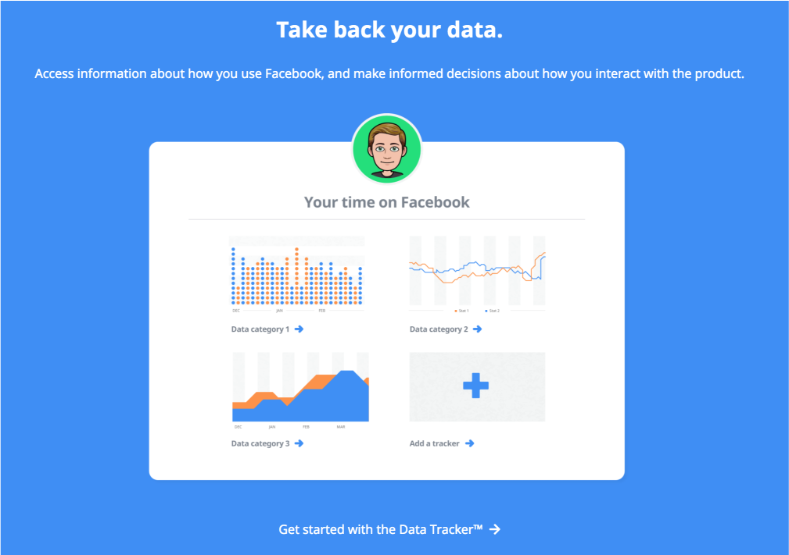An updated interface
Facebook's new interface helps you focus on the content that's important. It cuts out the distractions, allowing for quicker and more efficient communication. There's less time spent wandering through the site, and active engagement of friends and family is heavily encouraged. The "friend feed" replaces the news feed, and you can sort everything chronologically. Every panel can be customized, making sure that platform's functions align with the user's needs.
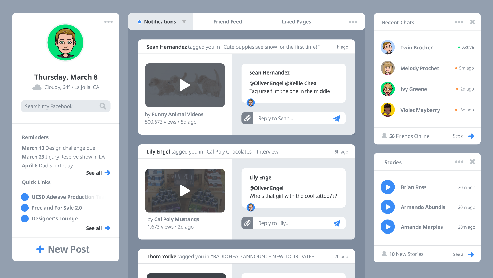